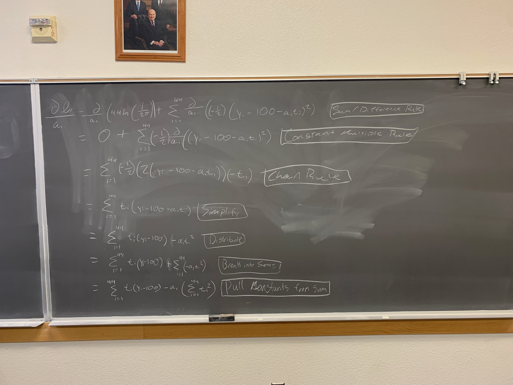
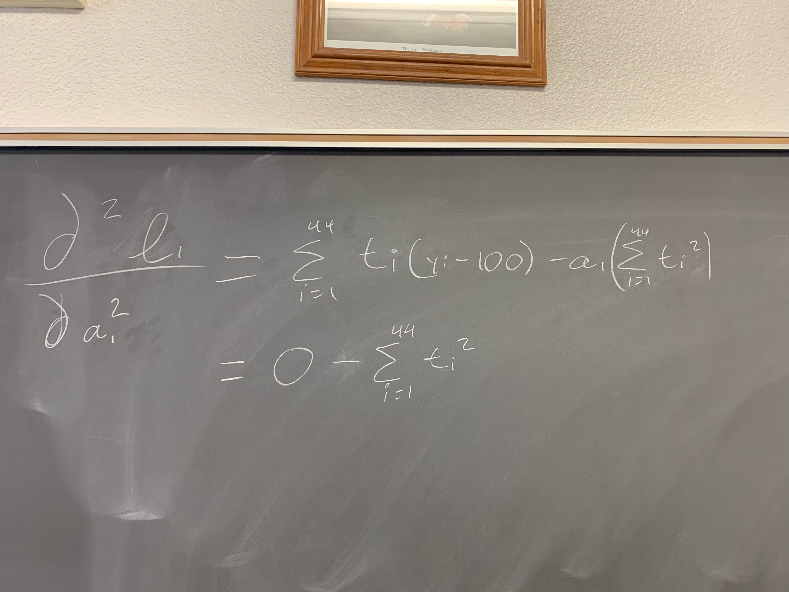
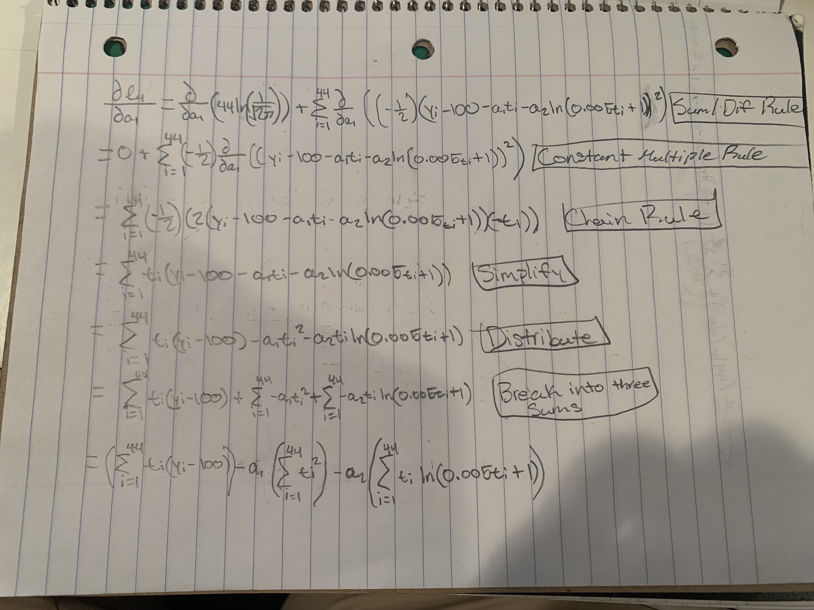
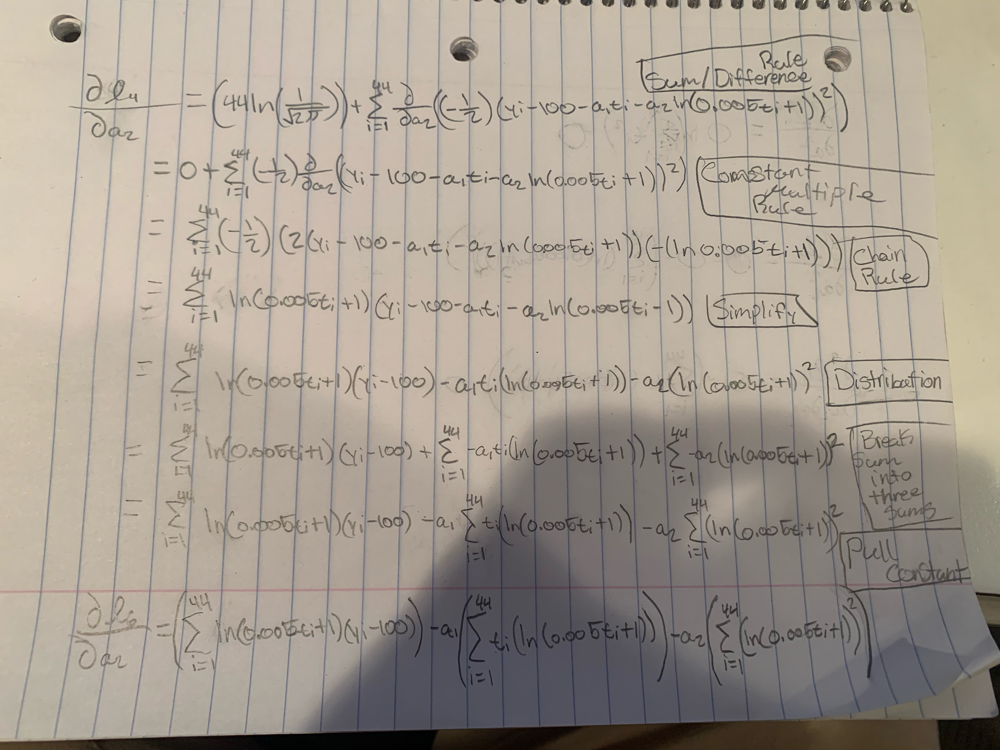
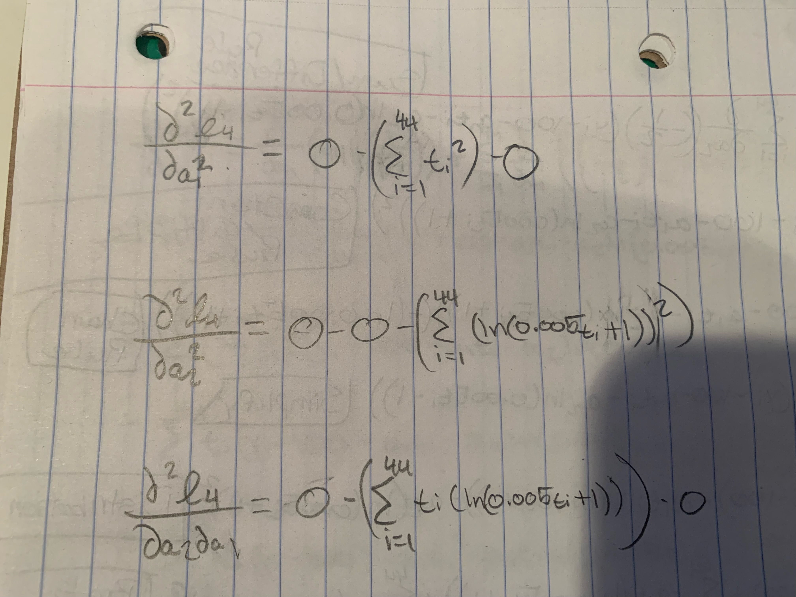
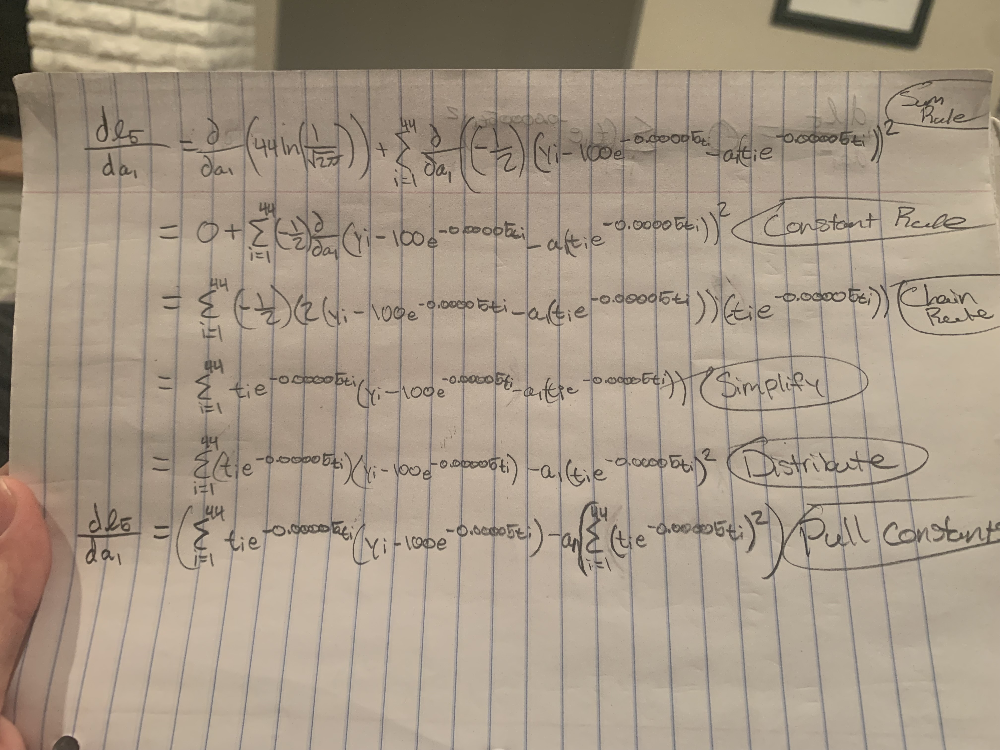
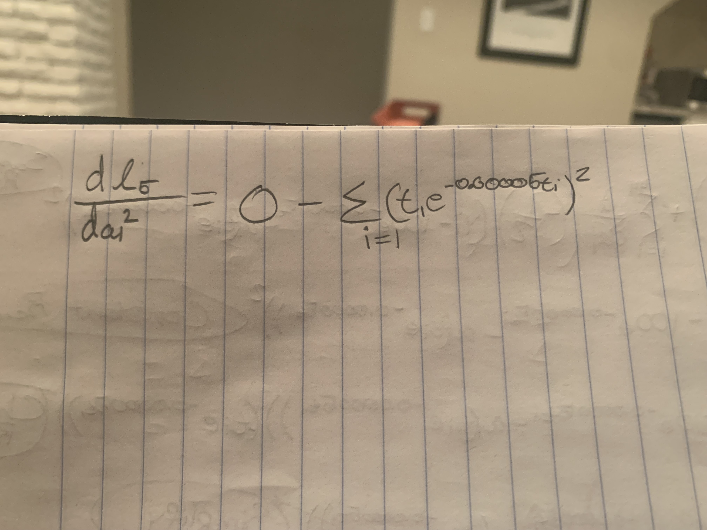

Project02Task02
Introduction
In this task, we are wanting to find the partial derivatives of a loglikelihood function for errors. We will being using f_1,f_4, and f_5 loglikelihood function that we obtained in task 1.
Function 1
I will show how to get the first and second derivatives of ℓ1(a1;t,y), the loglikelihood function for errors from the general model f1, with respect to a1 are as follows.
Derivative
As we look at the picture below, we first start by using the sum/difference rule this will then lead us to use the constant multiple rule to put the -1/2 in front. We will then use the power rule and then the chain rule to lead us to the next part. We will then simplify. Move on to distributing the t_i. We then break it into sums using the sum properties rule. Then we will finish by pulling the constants from the sum as seen below.

Second Derivative
In the picture below, we take the second derivative with respect to a_1. 
Function 4
I will show how to get the first and second derivatives of ℓ4(a1,a2;t,y), the loglikelihood function for errors from the general model f4, with respect to a1 and a2 are as follows. #### Derivative a1 As we look at the picture below, we first start by using the sum/difference rule this will then lead us to use the constant multiple rule to put the -1/2 in front. We will then use the power rule and then the chain rule to lead us to the next part. We will then simplify. Move on to distributing the t_i. We then break it into sums using the sum properties rule. Then we will finish by pulling the constants from the sum as seen below.

Derivative a2
As we look at the picture below, we first start by using the sum/difference rule this will then lead us to use the constant multiple rule to put the -1/2 in front. We will then use the power rule and then the chain rule to lead us to the next part. We will then simplify. Move on to distributing the ln. We then break it into sums using the sum properties rule. Then we will finish by pulling the constants from the sum as seen below.

Second Derivative a1 and a2
In the picture below, we take the second derivative with respect to a_1, a_2.

Function 5
I will show how to get the first and second derivatives of ℓ5(a1;t,y), the loglikelihood function for errors from the general model f5, with respect to a1 are as follows. #### Derivative As we look at the picture below, we first start by using the sum/difference rule this will then lead us to use the constant multiple rule to put the -1/2 in front. We will then use the power rule and then the chain rule to lead us to the next part. We will then simplify. Move on to distributing the t_ie. We then break it into sums using the sum properties rule. Then we will finish by pulling the constants from the sum as seen below.

Second Derivative a1
In the picture below, we take the second derivative with respect to a_1.

Conclusion
By using the loglikelihood functions from task 1, we were able to find the partial derivatives of these functions.